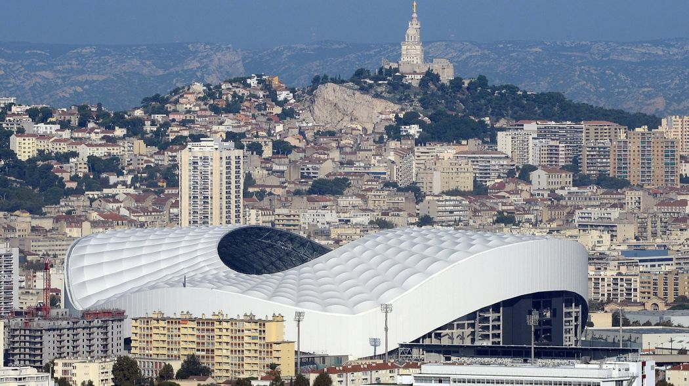
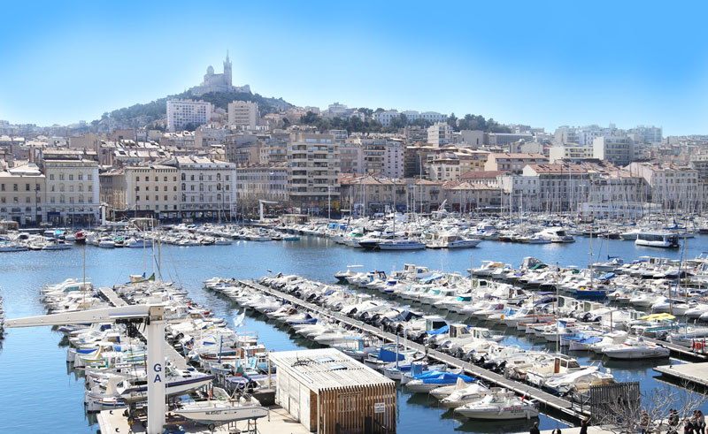
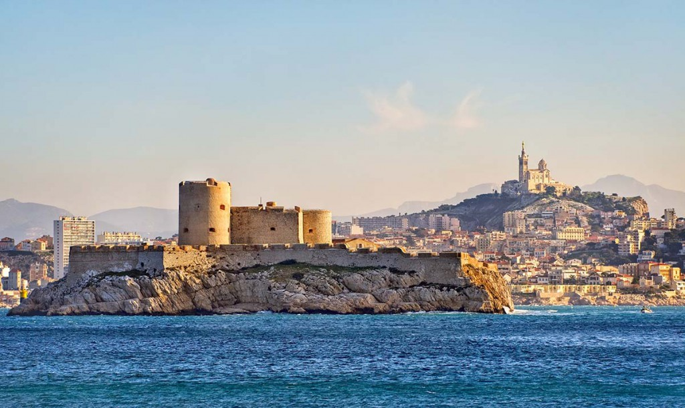

Kostas Mitroglou
mitrogoal@ajamaislespremier.om
Ma visite
Kayak de mer
Une randonnée magique en demi journée pour découvrir par la mer les Calanques de Cassis et se faire une pause dans la célèbre calanque d’En Vau avec Kayak Cassis Parcours Après un briefing sur l’utilisation d’une pagaie et d’un kayak par un guide exceptionnel les kayaks seront mis à l’eau dans la calanque de Port Miou. Ce sera le moment pour vous de mettre en application les explications théoriques de votre guide et de donner vos premiers coups de pagaie en kayak. vous évoluerez ensuite vers la calanque de Port Pin bordées par ces pins d’Alep puis la calanque d’En Vau où vous pourrez observer ces hautes parois rocheuses de calcaire et ces eaux de couleur bleu turquoise. La durée de la randonnée est de 3 heures Lieu de rendez vous Parking de la Madie à Cassis à 9h – 13h30 ou 15h30 en fonction de votre réservation.
Le stade vélodrome
Le stade, inauguré en 1937, accueillait à l’origine d’autres manifestations sportives (arrivées du Tour de France cycliste, championnats du monde de vélo sur piste (d’où son nom), des compétitions d’athlétisme, de gymnastique, de boxe et de rugby). Le stade s’est transformé au fil des grands rendez-vous comme le Championnat du Monde en 1984, la Coupe du Monde de 1998 et l’Euro de 2016. C’est désormais un stade moderne de 67 000 places couvert, répondant aux dernières normes en matière d’accessibilité et d’énergie
 BUS-METRO-VOITUREle vieux port
Depuis 26 siècles, le Vieux-Port est le théâtre prestigieux où se joue l’histoire de Marseille. Durant l’Antiquité et le Moyen Age, la ville grecque (Massalia), puis romaine (Massilia) et médiévale (Masiho) s’est développée sur la rive Nord puis vers le Sud au XVIIe siècle. Dès lors, l’entrée du port allait être gardée par deux forts, le fort Saint-Nicolas et le fort Saint-Jean. Une des silhouettes symboles du Vieux-Port a notamment été le pont transbordeur, ouvrage métallique inauguré en 1905 entre les deux forts, mais malheureusement détruit après la guerre. En 2013, le Vieux-Port a été rénové (accès au port plus facile, circulation réduite, création d’une ombrière par Norman Foster)et reste aujourd’hui le cœur névralgique de Marseille sous le regard bienveillant de Notre-Dame-de-la-Garde.
 BUS-METRO-VOITURELe château d'If
C’est en 1516, que le roi François Ier eu l’idée de construire une forteresse sur l’île d’if, lors d’une visite à Marseille. L’édifice devint alors très vite une prison en raison de son isolement, rendant ainsi l’évasion de prisonniers plus complexe. On y comptait d’ailleurs le célèbre prisonnier José Custodio Faria, rendu immortel par Alexandre Dumas, auteur du Comte de Monte-Cristo. Le site regorge de “petites histoires”. On peut y voir notamment le légendaire trou creusé dans le mur par Edmond Dantès lors de son évasion. La forteresse finira par accueillir les insurgés de 1848 et les communards de 1871. Elle perdra sa vocation carcérale, avant d’être ouverte au grand public en 1890.
 NAVETTE MARITIME